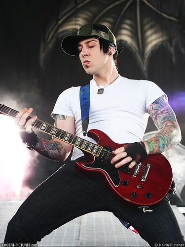

Avenged Sevenfold (juga dikenal sebagai A7X), adalah band beraliran metal core yang berasal dari Huntington Beach, California.
Mereka berasal dari tempat yang sama dimana kesemuanya kecuali Synyster Gates berasal dari sekolah yang sama, yaitu Huntington Beach High School. Mereka terbentuk di awal tahun 1999 dimana personil awalnya hanya beranggotakan empat orang saja yaitu M.Shadows, Zacky Vengeance, The Rev dan Justin Sane (Bass).
Nama Avenged Sevenfold diambil dari salah satu kisah di dalam bibel. Walaupun mengambil nama dari bibel, M.Shadows mengakui bahwa bandnya tidak terlalu religius ataupun bertujuan untuk menyebarkan suatu kepercayaan religi atau poltik kepada penggemarnya.
Dalam perjalanannya, Avenged Sevenfold sempat berganti aliran dari metal-core menjadi lebih ke arah alternative metal. Rumor yang beredar mengatakan hal ini dikarenakan sang vokalis, M.Shadows harus menjalani operasi akibat pita suaranya yang sobek akibat melakukan scream yang terlalu keras pada sebuah konser.
Namun dalam setiap kesempatan wawancara, Avenged Sevenfold sering menyangkal kebenaran rumor ini. Perubahan aliran yang mereka lakukan lebih dikarenakan mereka amat menyenangi melakukan eksperimental dalam bermusik dan ingin melakukan evolusi dalam gaya dan aliran bermusik mereka.
Avenged Sevenfold memiliki lambang yang merekan namakan “Deathbat”. Lambang ini dirancang oleh teman semasa SMA mereka, Micah Montague. Lambang ini selalu muncul di setiap konser mereka dan hampir selalu ada di setiap album mereka.
Album pertama mereka, Sounding the Seventh Trumpet direkam ketika mereka masih berumur 18 tahun. Album ini dirilis dengan label Good Life Recordings, tetapi setelah gitaris Synyster Gates masuk Avenged Sevenfold, album ini dirilis ulang dengan label Hopeless Records. Lagu “To End The Rapture” juga direkam ulang, kali ini ditambahkan dengan permainan gitar Synyster Gates. Dan akhirnya dirilis pada bulan juli 2001. Walaupun yang bermain bass dalam rekaman pembentukan album adalah Justin Sane, namun pemain bass yang tertera dalam CD skin adalah Daemon Ash. Hal ini dikarenakan sesaat sebelum proses mixing album tersebut, Justin Sane dikeluarkan dari band dan digantikan Johnny Christ. Sampai saat ini belum diketahui penyebab terusirnya Justin Sane dari band tersebut.
Album
Hail To The Kings
Daftar Lagu
1. So Far Away
2. Seize The Day
3. NIghtmare
4. Dear Good
5. The Beast And The Harlot
6. Critical Acclaim
7. Welcome The Family
8. Scream
9. Almost Easy
10. Afterlife
3 Lagu Avenged Sevenfold Yang Paling Banyak Di dengar
1. Hail To The Kings
2. So Far Away
3. Seize The Day
Matthew Charles Sanders (lahir 31 Juli 1981; lebih dikenal dengan nama M. Shadows) adalah pengarang lagu dan penyanyi dari Amerika Serikat. Dia mendirikan grup musik rock Avenged Sevenfold bersama Zacky Vengeance, Jimmy "The Rev" Sullivan, dan Matt Wendt. Kemudian teman Sullivan, Synyster Gates, bergabung menjadi gitaris. Shadows memiliki jenis suara bariton tinggi dan terkenal karena suara yang terdengar serak-serak kasar dan nyaring dengan teriakan khas.
Jonathan Lewis Seward (lahir 18 November 1984), lebih dikenal dengan nama Johnny Christ, adalah bassis dari Avenged Sevenfold. Johnny Christ adalah bassis keempat yang bergabung dengan Avenged Sevenfold pada tahun 2002 menggantikan personel sebelumnya yaitu Dameon Ash dan Justin Sane. Dia dibesarkan di Huntington Beach, California. Johnny adalah adik dari teman sekolah Synyster Gates..
Brian Elwin Haner, Jr. (lahir 7 Juli 1981) atau lebih dikenal dengan nama Synyster Gates adalah seorang musisi dan gitaris untuk grup musik Avenged Sevenfold. Brian mendapatkan gitar pertamanya dari nenek dan kakeknya. Salah satu lagu pertama yang ia pelajari adalah lagu Stairway to Heaven karya Led Zeppelin. Ketika Brian duduk di kelas 6, ia sudah bisa menebak chord dari sebuah lagu hanya dengan menggunakan pendengarannya. Setelah Brian diberi gitar, dia mengatakan bahwa sekolah sudah tidak ada gunanya. Nilai bagus hanya dia peroleh sampai ia duduk di kelas 4.
Brian memasuki grup musik Avenged Sevenfold sebagai gitaris ketika ia berumur 18 tahun pada akhir tahun 1999. Dia juga memainkan piano pada lagu "Beast and the Harlot" dan "Sidewinder". Dia menciptakan lagu pertamanya berjudul "So Far Away" untuk mengenang sahabat sekaligus drummer Avenged Sevenfold, James Owen Sullivan atau lebih dikenal dengan The Rev yang meninggal pada tanggal 28 Desember 2009.

Zacky adalah anak sulung cucu dari zeuz, mempunyai adik perempuan yang bernama Zina. Orangtuanya bernama James dan Maria. Zacky mempunyai pasangan yang bernama Gena.Pada DVD Avenged Sevenfold yang berjudul All Excess, Zacky mengatakan bahwa sebelum dia memasuki Avenged Sevenfold, dia sempat menjadi anggota dari grup musik beraliran punk rock bernama MPA atau Mad Porno Action yang gagal mencapai sukses. Maka Zacky dan M. Shadows membentuk Avenged Sevenfold.
Zacky mempelajari cara bermain gitar ketika dia berumur tiga belas tahun.
James Owen Sullivan (9 Februari 1981 – 28 Desember 2009) atau lebih dikenal dengan nama The Rev atau The Reverend Tholomew Plague adalah seorang drummer sekaligus penyanyi latar untuk grup musik Avenged Sevenfold. The Rev juga menjadi lead vocal pada grup musik Pinkly Smooth. .